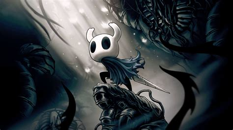

Biografía

Ghost es el protagonista silencioso del juego Hollow Knight, un caballero misterioso que recorre Hallownest para descubrir secretos de un reino olvidado. Con habilidades únicas y un espíritu valiente, Ghost enfrenta a los enemigos y se aventura en un mundo lleno de misterios y peligros.